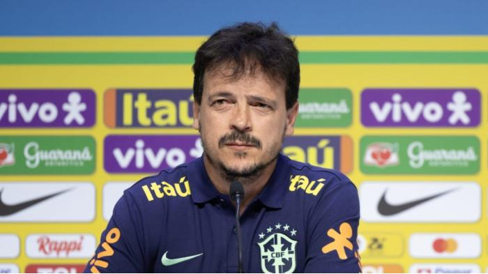
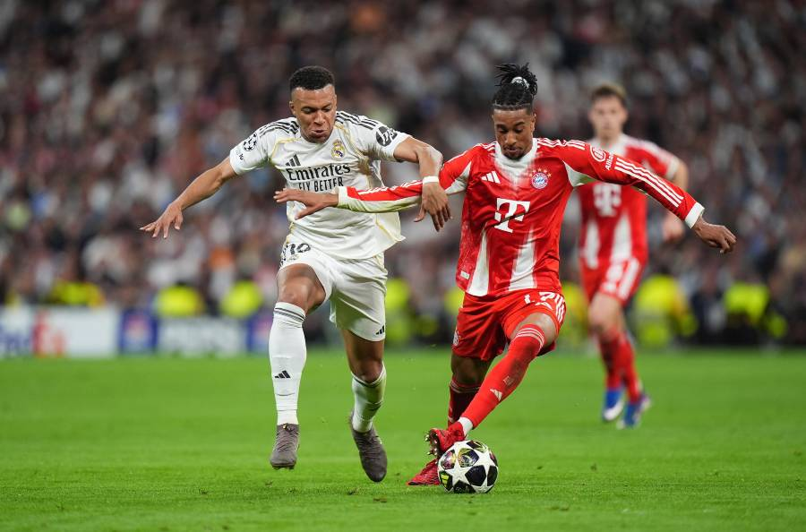
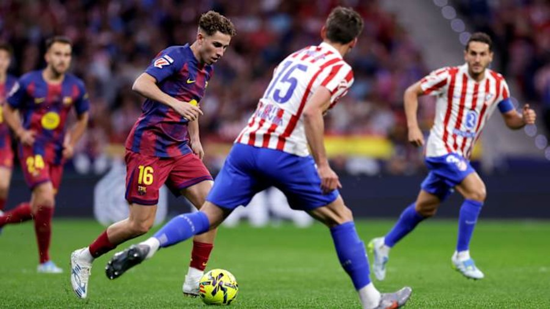
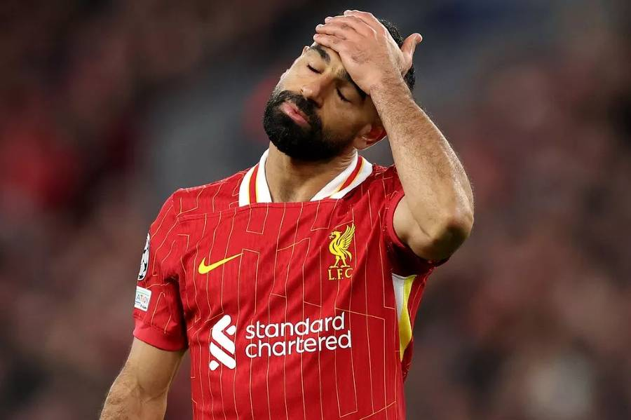
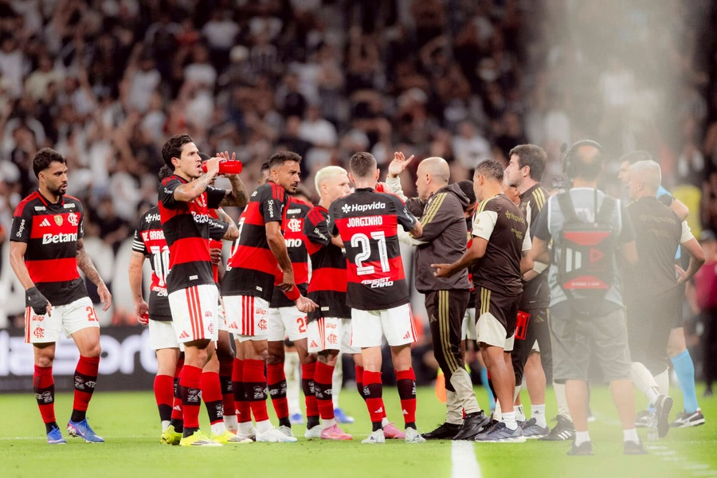
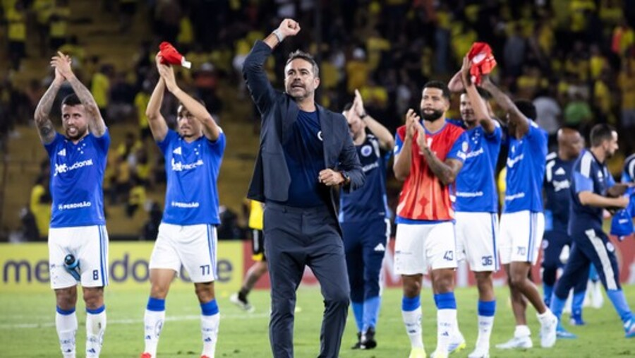
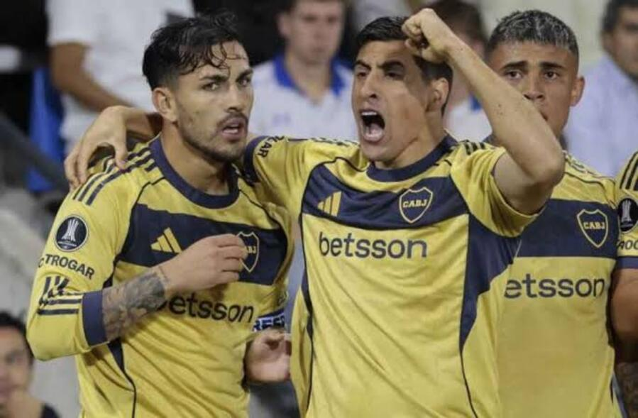

Bastidores: O principal objetivo da diretoria corinthiana na decisão de Fernando Diniz comandar o Corinthians
Champions League

Bayern vence o Real Madrid no Bernanbéu e abre uma grande vantagem no jogo de volta

Sem Raphinha, barcelona enfrentará o Atlético de Madrid nas quartas da Champions League

PSG de Luís Henrique enfrentará um liverpool abalado com a goleada sofrida contra o City no sábado
Principais destaques
Principais jogos da Premier League
Qual time brasileuro terá o jogo mais dificíl da libertadores
CBF faz os últimos ajustes na renovação de Carlo Ancelloti, faltando apenas ele assinar
Barcelona vence Atlético de Madrid e está cada vez mais perto de conquistar a LaLiga
Libertadores

Cusco x Flamengo: possível escalação do flamengo com a ausência de Jorginho

Após retornar a competição, Cruzeiro vence com gol de Matheus Pereira
